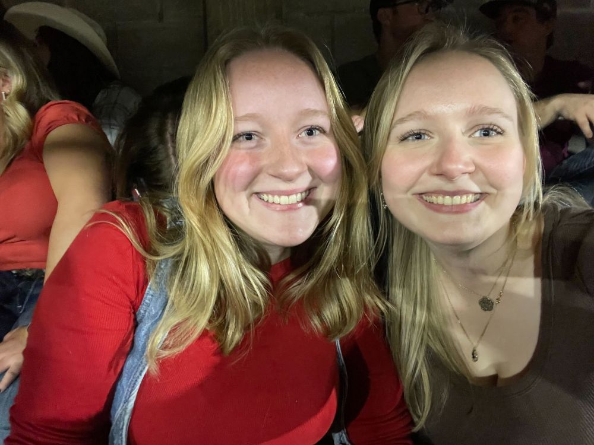

Brooke Noftle
Hello there! I'm a Junior here but I've only been a computer science major for two semesters. I want to be either a math professor or a video game programmer.
I really love hanging out with my family and friends. I like being out in nature, whether that's taking my sister(on the left)'s dog for a walk or going for a (easy) hike. I also really like video games.
My favorite quote in from Elder Garrett Gong, he says "When life is cluttered and purpose isn’t clear, when you want to live better but don’t know how, please come to God our Father and Jesus Christ. Trust They live, love you, and want all things for your good."